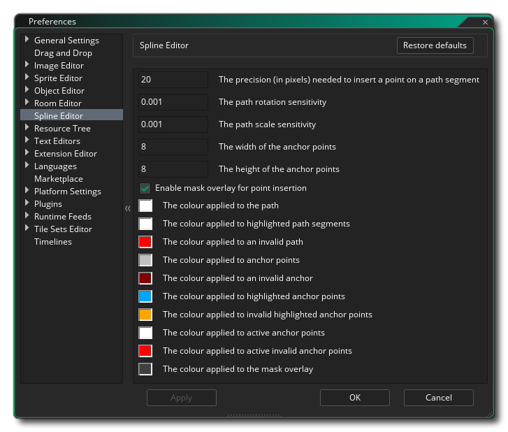

The Spline Editor Preferences are used primarily to
define how the path editor looks
and feels, although they will affect certain other aspects of the
IDE (like the physics shape editor). The following options
exist:
- Insert path point precision (px) - This sets the
precision value (in pixels) for inserting points on a path, ie: the
mouse must be within this range to insert the point rather than add
a new one. Default is 20px.
- Anchor point width - Set the width of the anchor points,
in pixels. Default is 8px;
- Anchor point height - Set the height of the anchor
points, in pixels. Default is 8px;
- Path colour - The colour to be used to show the path as
you edit it. Default is (rgba) #FFFFFFFF.
- Highlighted path segment colour - The colour to be used
to highlight any selected path segments. Default is (rgba)
#FFFFFFFF.
- Invalid path colour - The colour to be used to highlight
a path that is not valid. Default is (rgba) #FF0000FF.
- Anchor points colour - The colour to be used to draw the
path anchor points. Default is (rgba) #C0C0C0FF.
- Invalid anchor points colour - The colour to be used to
draw the path anchor points. Default is (rgba)
#800000FF.
- Selected anchor point colour - The colour to be used to
draw the path anchor points that have been highlighted (selected).
Default is (rgba) #00A4FFFF.
- Selected invalid anchor point colour - The colour to be
used to draw the anchor points that are highlighted but invalid.
Default is (rgba) #FFA400FF.
- Mouse-over anchor point colour - The colour to be used
to draw the anchor points that are active. Default is (rgba)
#FFFFFFFF.
- Mouse-over invalid anchor point colour - The colour to
be used to draw the anchor points that are active but invalid.
Default is (rgba) #FF0000FF.
- Mask overlay colour - Set the overlay colour for masks
if they are enabled (see above). Default is (rgba)
#404040FF.